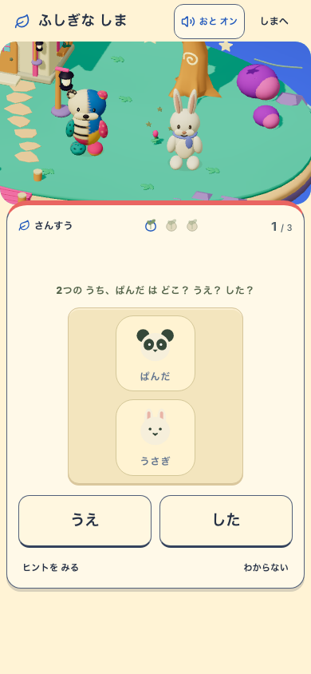
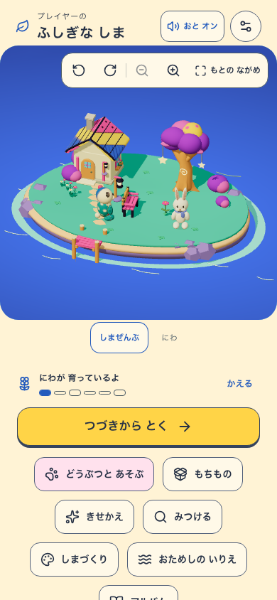
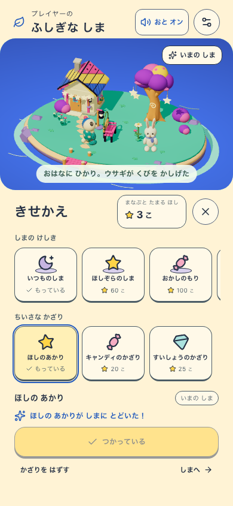
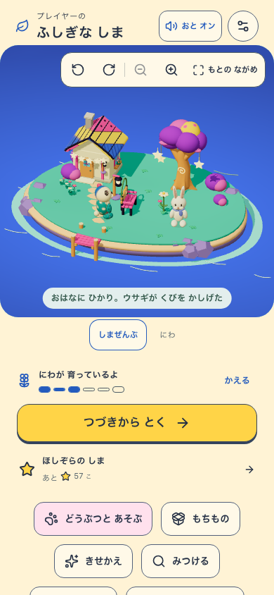
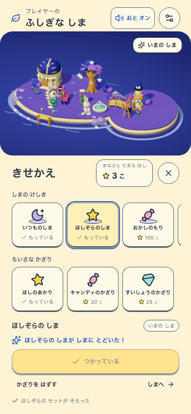
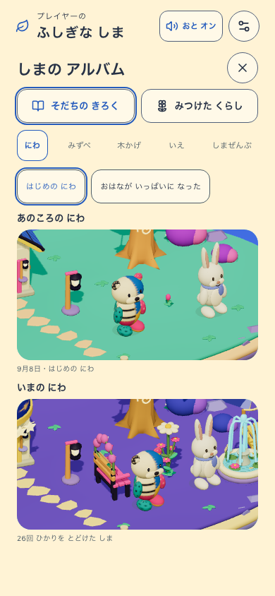
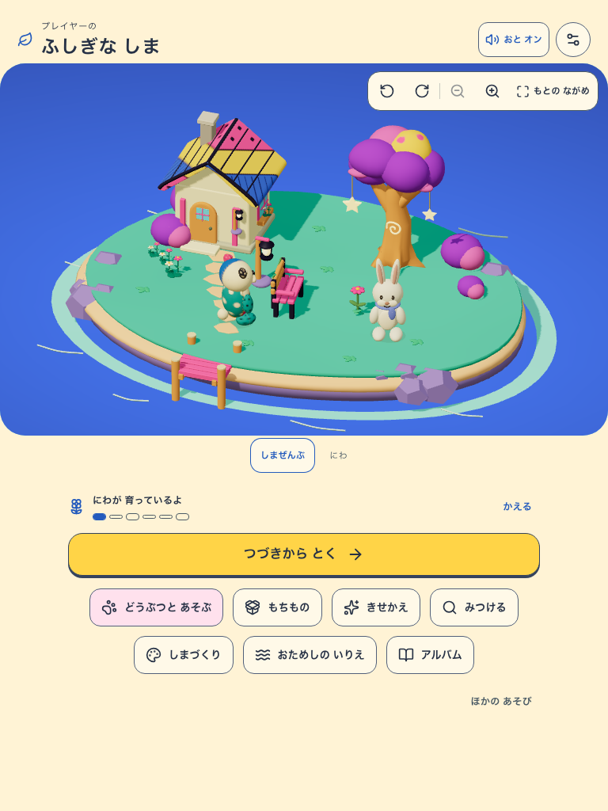
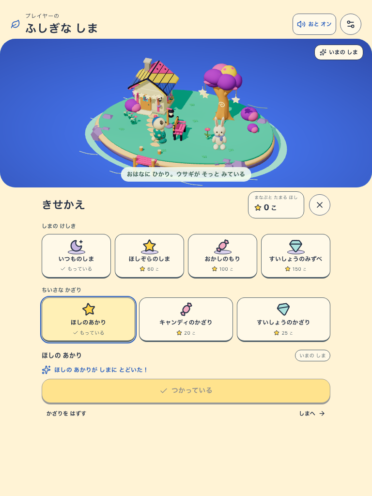
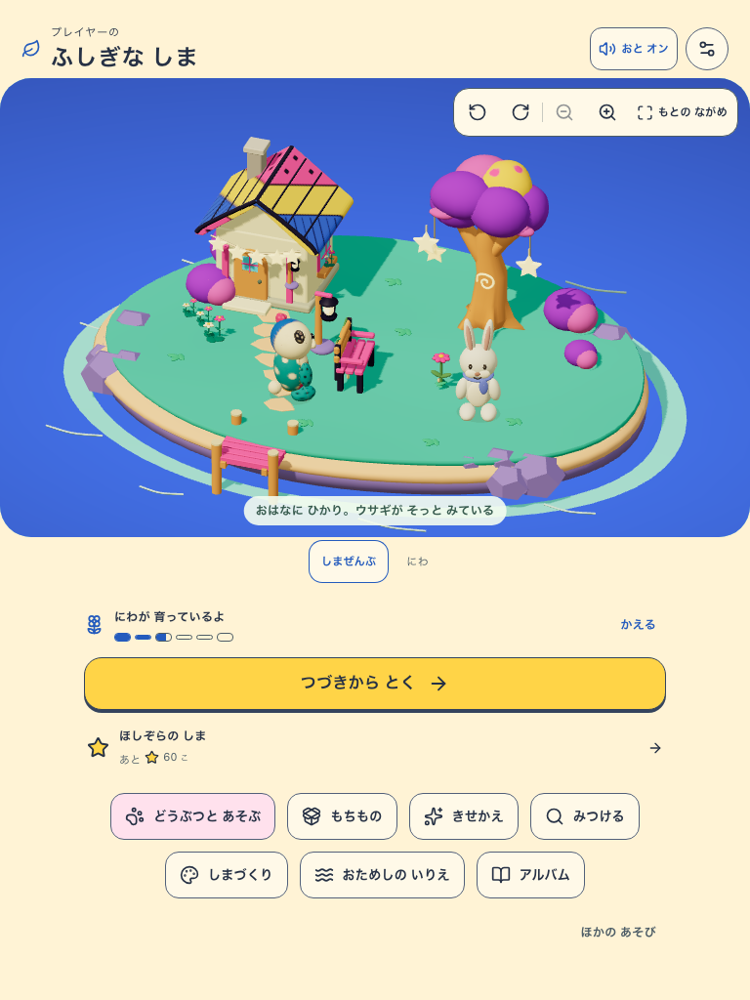
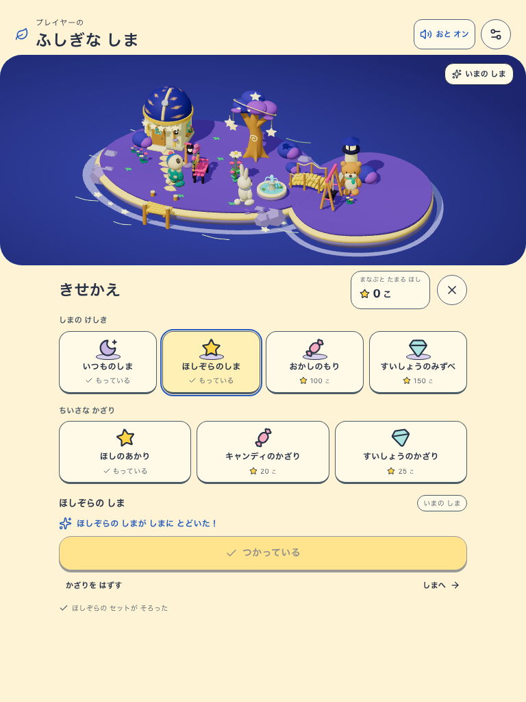
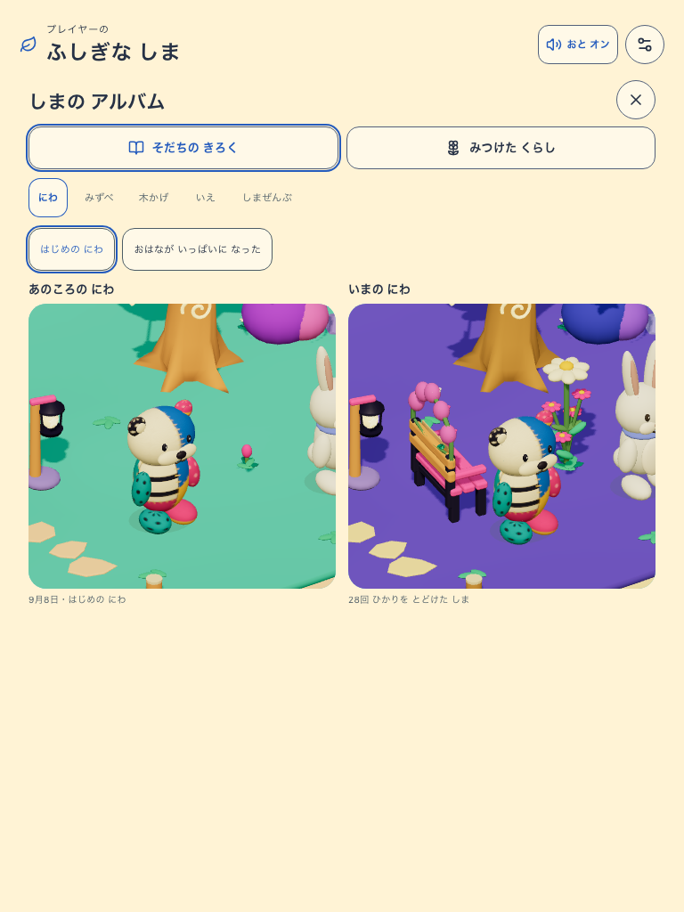
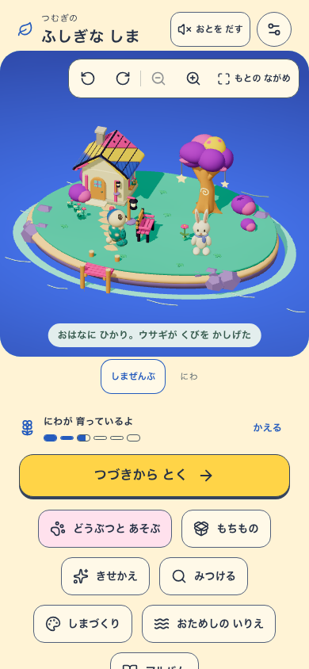
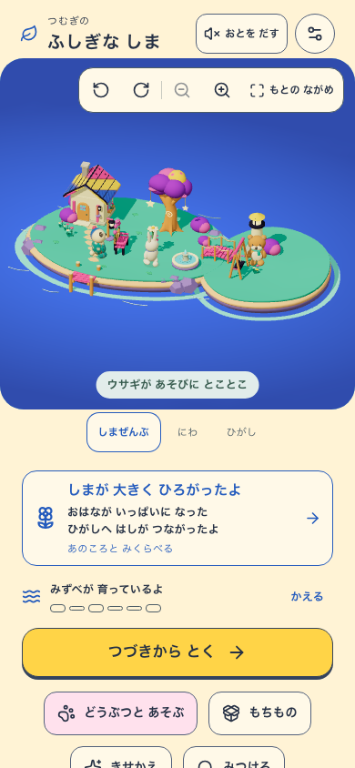
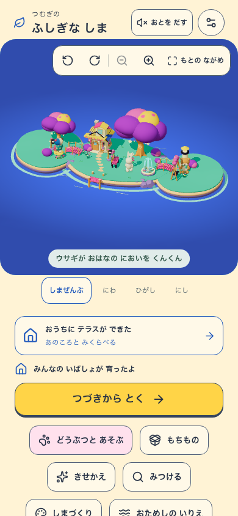
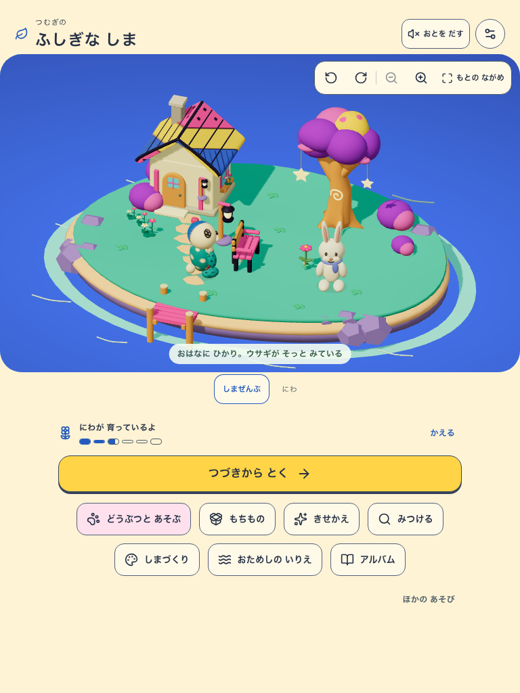
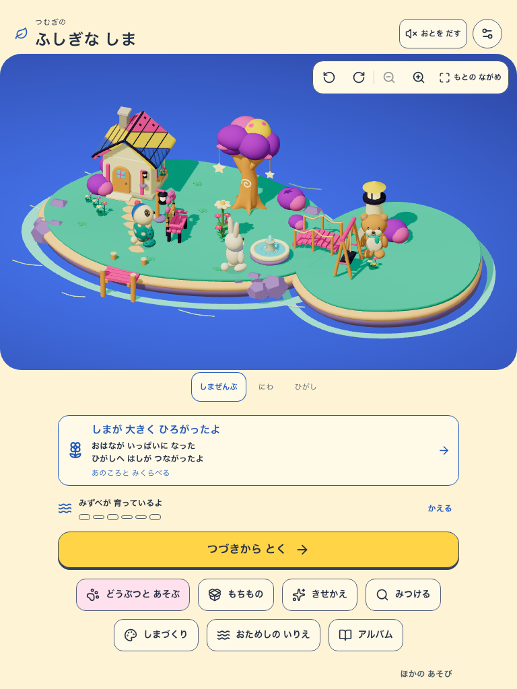
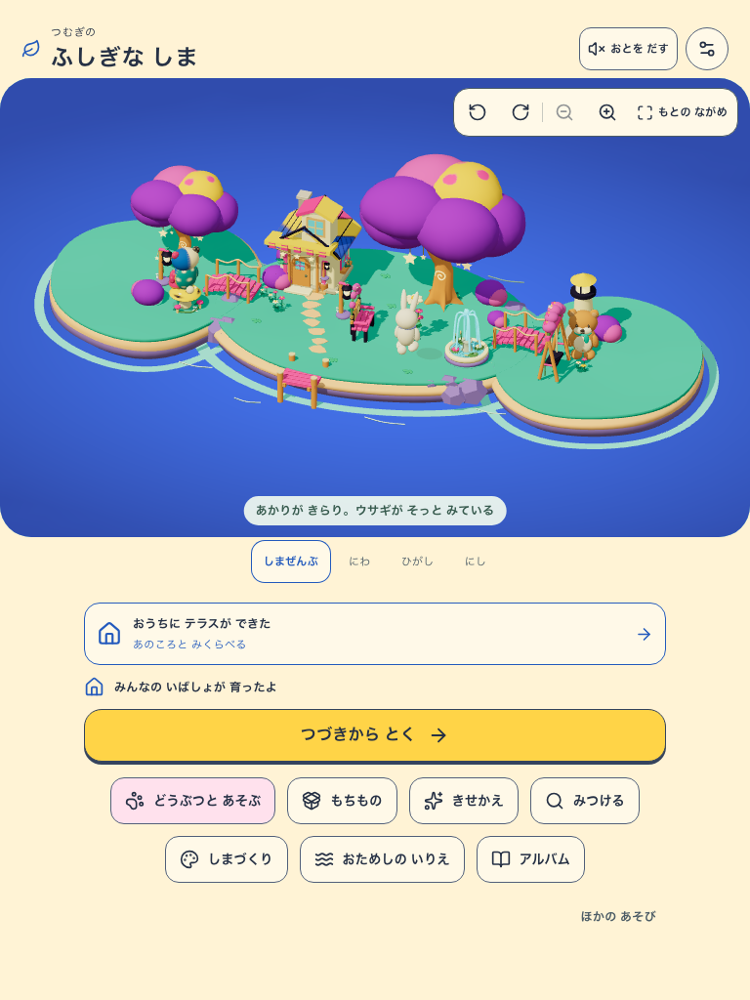
初回の小さな変化を残し、買い物と島の完成を段階的な目標にする。獲得済みの星・所有・成長・土地・アルバムは保持。
| 対象 | 調整前 | 調整後の新予約 |
|---|---|---|
| ほし | 3〜6問ごとに10個 | 完了1問につき1個、区間完了時に保存 |
| 飾り | 各10個 | 15 / 20 / 25個 |
| テーマ | 30 / 50 / 70個 | 60 / 100 / 150個 |
| 成長の各目盛り | 各1区間 | 3 / 6 / 9 / 12 / 15 / 18問 |
| 全4居場所の成熟の例 | 24区間・141問 | 44区間・261問 |
成熟の例は初回3問・以降すべて6問。教科・問題による区間長で区間数は変わる。支援や訂正も同額、速さや連続日数の倍率はない。旧予約は保存済みの方式で最後まで完了できる。
固定検証用アプリ: http://127.0.0.1:5391
Revision: 463508f-balance-0eb78c6ab82a
Flag: VITE_ISLAND_ENABLED=true / VITE_BUILD_PLAY_ENABLED=false
実UI 2件＋旧値の明示fixture 2件: PASS。phone/tablet・実SW offline。作者確認、子どもN=0。正確なbuild/version/candidateとキャプチャのhashは検証JSONを参照。進行中の別変更と公開版の完成証拠は分ける。

















実plannerでは両サイズとも14/25/36/47区間で成熟。固定6問の設計例とは区間長が異なる。検証範囲・元の失敗・制約